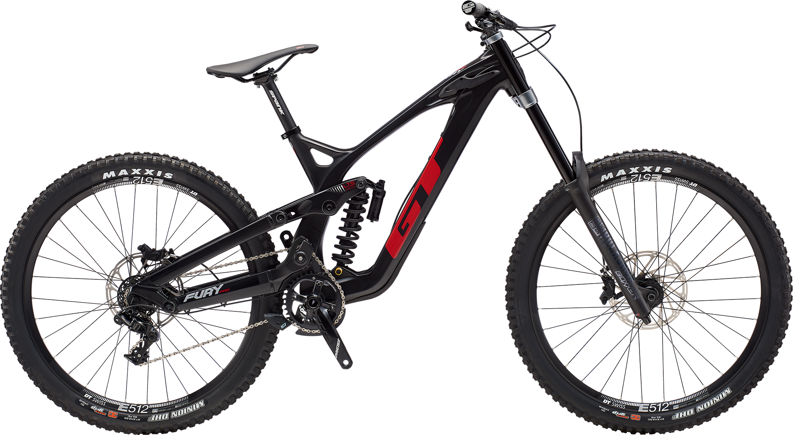
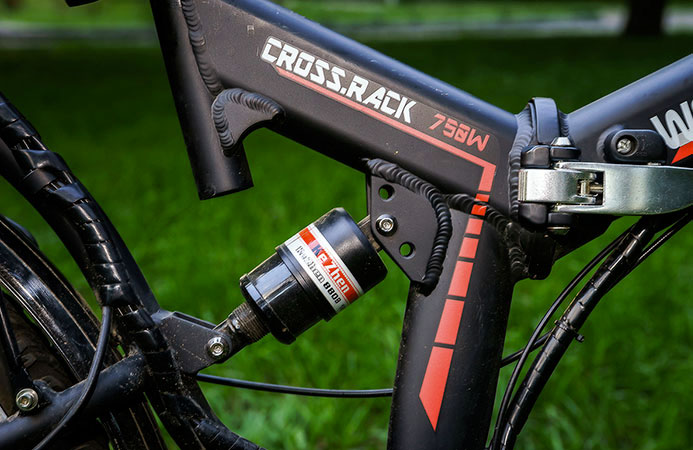
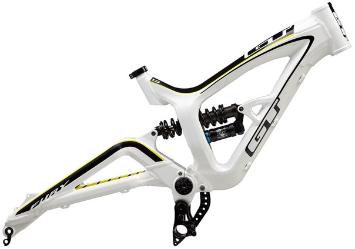
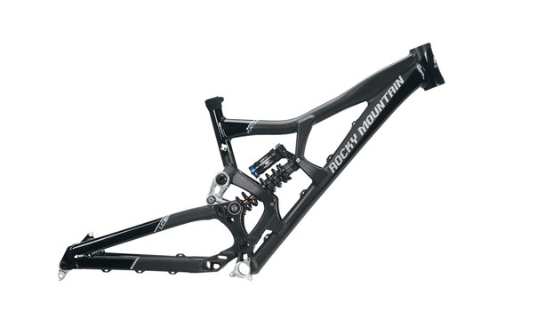

ПРЕИМУЩЕСТВА И НЕДОСТАТКИ ДВУХПОДВЕСНЫХ ВЕЛОСИПЕДОВ
Определение
Двухподвесные велосипеды – это один из наименее распространённых типов байков в классификации по наличию подвесок. Наиболее популярными в России являются хардтейлы (велосипеды с только передним амортизатором), а наиболее популярным во всём мире остаются ригиды – велосипеды без амортизаторов.
Конструкция
Как уже было сказано, велосипед двухподвес – это конструкция с двумя амортизаторами, т.е. к стандартной передней вилке добавляется задний амортизатор, который компенсирует неровности и увеличивает комфорт райдера. Добавление такого элемента к раме серьёзно усложняет всю конструкцию велосипеда и его вес, кроме того, из-за штучности и разнообразия конкретных условий использования.
В последнее время появились решения специально для комфорта и дизайна – так называемые софт-тейлы, велосипеды с небольшим ходом заднего амортизатора и упрощённой его конструкцией. Похоже, это и есть закрепляющееся разделение на «профессиональные» байки с двумя подвесками и «массовые», прогулочные модели. Основная ориентация – это горный стиль катания.
От хардейла рассматриваемые нами модели отличаются очень серьёзно:
- полностью переделанная рама;
- часто изменяемая конструкция системы;
- отсутствие дополнительных аксессуаров, таких как багажник, успокоитель цепи. Очень редко встречаются «городские» крылья.
Типы подвесок
Рассмотрим подробнее, какими могут быть амортизаторы на заднее колесо, и как для них изменяется конструкция рамы.
Консольные
Самая первая конструкция, которая появилась, де-факто, тогда же, когда появился первый горный байк – в 80х годах. Предельно простая конструкция и невысокая цена компенсируются чуть меньшей надёжностью, чем у других типов, и небольшим ходом – степень свободы откровенно невелика.
В основе такого подключения находится маятник, закреплённый к раме по одной оси и соединённый с амортизатором. Данная конструкция однообразно и частично ограничена профильными патентами. Пожалуй, из-за них и возможных разбирательств, а также из-за ограниченности в доработке, появилось логичное развитие данной конструкции – многорычажная система.
Многорычажные
В данной конструкции колесо соединяется с рамой через набор шарниров и рычагов, де-факто стандартной стала комбинация из четырёх штук. Система не проста и, соответственно, обладает серьёзным весом и стоимостью. Высокие требования к технологии изготовления приводят к тому, что долговечность такой конструкции оставляет желать лучшего почти на всех моделях.
Треугольник
Тоже достаточно старая конструкция с высокой стоимостью. В ней вся трансмиссия заключается в задний маятник, т.е. образует подрессоренный треугольник. Главное отличие – это меньшая нагрузка на цепь и звёздочки, которое компенсируется более высокими требованиями к амортизатору и его долговечности. Кроме того, такая система достаточно тяжела и требует серьёзного обслуживания постоянно.
Плюсы и минусы
После вступления кратко рассмотрим выводы из изученных особенностей, которыми обладает двухподвесный велосипед, его плюсы и минусы.
Плюсы:
- управляемость на бездорожье;
- устойчивость байка в любых условиях, включая асфальт;
- яркий внешний вид;
- экономия сил на преодоление препятствий;
- комфорт райдера и уменьшение нагрузки на суставы от вибрации.
Минусы:
- высокая стоимость;
- большой вес байка;
- недолговечность конструкции и необходимость в частом обслуживании;
- гашение энергии педалирования (низкий КПД);
- сложность выбора.
В сумме, можно сказать, что двухподвес – всё ещё продукт для спортивного использования в даунхилле и других дисциплинах, где он раскрывает все свои преимущества. Для повседневного использования такие модели стоит использовать только очень богатым райдерам, остальным же стоит подождать несколько лет до окончательного развития класса софттейлов.